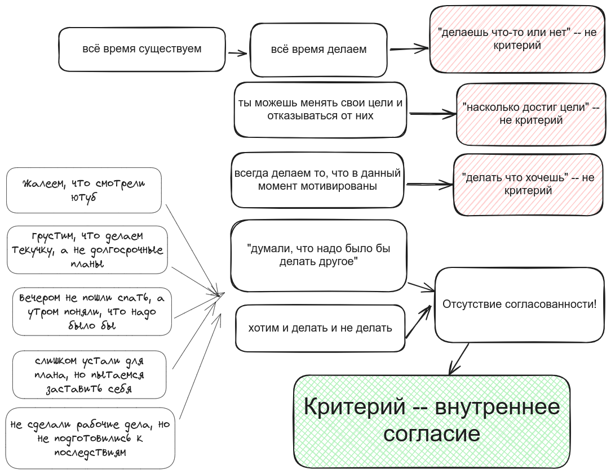

Определение
Продуктивность — способ достижения внутреннего согласия в приложении к делам

Это — статья больше про мироощущение. От неё до практики — как от Москвы до Харбина. Наряду со статьёй про долженствование она на границе “продуктивности”. Но всё же я надеюсь вы найдёте её полезной для себя :)
Как всё сложно. Продуктивность непродуктивности
“на земле” продуктивность это очень просто. Есть цель. Насколько ты её достигаешь — настолько ты и продуктивен.
- Сказали выполнить задачу за час, ты выполнил — супер!
- Решил “вечером разбираешь комнату”, разобрал — супер!
- Договорился встретиться на неделе, встретился — супер!
Но копая глубже, смотря контрпримеры ты понимаешь, что во всех примерах выше могут быть серые пятна
- Сказали выполнить задачу за час, а ты ресёрчил 2 часа и решил более верхнеуровневую проблему — ты супер? (Наверно, если было время и не надо было делать именно ту задачу)
- Решил вечером разбирать комнату, но вместо этого сначала лёг прикорнуть, а потом доделал отчёт — ты супер? (Наверно, если ты уверен, что ещё разберёшь потом, а сейчас смог взять и решить более трудную и актуальную задачу. Но если это из раза в раз такая ситуация — скорее не очень)
- Договорился встретиться на неделе, но перенёс встречу на потом — ты супер? (Наверно, ведь хотел бы друг видеть твою мёртвую тушку лишь из-за договора? Но может и нет, может это поломало и ему и тебе все планы)
Так что же не может быть критерием и что нам остаётся? Давайте разбираться
Было бы просто? Где “ломаются” простые определения
- ==Деланье “дел” не — определение продуктивности==. “Продуктивен тот, кто больше делает дел” — самая очевидная идея. Беда лишь в том, что некому отделить “дела” от “не дел”. Кто скажет, что “уборка в квартире” это “дело”, а “прогулка в парке” или “просмотр ютуба” — нет? “Второе не ведёт к цели, не создаёт никакой “продукт"" — может скажете вы. Но если оно позволяет вам отдохнуть и восстановить силы, разве это не помогает? И тогда разве “просмотр ютуба” отличается от “обсуждения проблем с коллегами” — и там и там мы напрямую не приходим к продукту, но косвенно — да.
- ==достижение целей не — определение продуктивности==. Когда кто-то другой даёт нам задачу, он и оценивает насколько мы справились. Начальник сказал подготовить отчёт? Чем быстрее мы подготовим, тем мы продуктивнее. Но с личной продуктивностью оно так не канает. Решили вы в детстве стать космонавтом. И что, теперь вся жизнь под откос, если вы не идёте к этой цели? В личной продуктивности мы сами определяем цель, сами же вольны её и сменить.
- ==следование своим желаниям не — определение продуктивности==. (несмотря на моё определение быть продуктивным значит определять и больше делать то, что ты хочешь на нужном тебе горизонте времени). Потому что мы всегда делаем то, что хотим в данный момент. Без желания что-то делать мы никогда не сделаем. Не хотим делать отчёт — не будем делать. Не хотим заниматься спортом — не будем. Мы могли думать, что хотим после работы убраться, но когда момент наступил и сил нет — хотим именно залипать в соцсетях да смотреть сериалы.
Важно постоянство. Чувствуем непродуктивность, когда наше “хотим” меняется
Личная продуктивность измеряется только личностью, только нами. И как же тогда быть, если “заказчик” и “исполнитель” — одно лицо?
- Хорошо, когда мы решили отдохнуть и отдыхаем
- Хорошо, когда мы решили работать и работаем
- Хорошо, когда мы решили работать, но поняли, что у нас нет сил и отдыхаем. А назавтра не корим себя за отдых
- Хорошо, если мы решили сделать одно дело, но сделали другое. А перенос первого нам потом не аукнется. Не будет такого “блин, надо было делать”.
- Плохо, когда это всё не так.
Ощущение нашей личной, персональной, продуктивности, это ощущение согласованности действий и желаний. Только мы можем составить себе план действий. И только мы можем решить, когда отклонение от плана — это “добро”, а когда — “зло”. Только мы можем решить, зачтём ли мы отдых как необходимую передышку или как прокрастинацию. И только мы можем хотеть или не хотеть изменить что-то в своём образе жизни — а именно в достижении этой поставленной нами самими цели (и только пока для нас самих цель актуальна) — может быть наша продуктивность.
Зачем тогда “техники”? Помощь в достижении
Кажется, что “внутреннее согласие” это полезный критерий, но не полный. Почему же существуют все эти разные техники продуктивности? GTD следуй, помидорро используй, 3 цели на день ставь,..
Моя мама — мудрый и зрелый человек. (Привет, мама, если ты это читаешь: за исключением твоих стремлений давать слишком много советов). Она не пользуется никакой системой организации дел, но вполне продуктивна в том смысле, что я вкладываю в этот термин. Конечно, она могла бы делать больше дел по профессии. Но если у неё не стоит такой цели — почему она обязана применять моё видинье к своей жизни? Она могла бы не плавать по 3 часа на озере каждый день летом, посвятив это время написанию монографии, но почему я считаю, что для неё это должно быть важно? Пока она следует своим стремлениям без всякой системы — я считаю её продуктивной.
Зачем тогда все эти бесконечные техники и методики, коли можно и без них?
Роль техник продуктивности — облегчить достижение внутреннего согласия. Техники призваны помочь достичь её в разных областях:
- в организации информации
- Вам проще чувствовать себя внутренне согласованным, если вы не беспокоитесь о потере важной информации. (Но это можно достичь не только системой хранения, но и идеей “легко пришло-легко ушло”. Вы всё ещё будете продуктивны, просто в целях будет меньше проектов, основанных на информации с прошлого)
- в привычках:
- Вам проще чувствовать себя внутренне согласованным, если вы научитесь делать “маленькие шаги” в привычках — тогда вы чаще делаете привычку и проще думать о себе “ну я же делаю, я молодец!”. Но если вы идёте с майндсетом “блин, я пробежал только 100 метров вместо 10 км”, никакие маленькие шаги не помогут. Согласия с собой всё равно нет
- Вам проще чувствовать себя внутренне согласованным, если вы используете триггеры — так вы чаще помните про привычки. Но если вы бы не парились, “сделал или не сделал, какая разница? когда не сделал это — сделал что-то другое” — вы бы были продуктивны и без всяких триггеров
- в продуктивности
- Вам проще чувствовать себя внутренне согласованным, если благодаря техникам вы научились составлять и следовать плану (ведь вы тогда с меньшей вероятностью постфактум решите, что всё фигня)
- Вам проще чувствовать себя внутренне согласованным, если у вас есть выбор из нескольких дел и вы можете сделать любое из них (привет, GTD). Так меньше вероятность, что вы не сделаете ничего и будете себя винить
- Вам проще чувствовать себя внутренне согласованным, если вы рассматриваете отдых как полноценную часть пути к достижению целей. Так у вас не возникнет постфактум чувства “ну и нафига я вчера весь день валялся”?
Мы сами ставим чему-то маркер “я делаю что-то полезное”, а чему-то другому “я просто прокрастинирую”. Суть продуктивности — помочь ставить эти маркеры так, чтобы потом не жалеть. И роль техник — лишь в этой помощи.